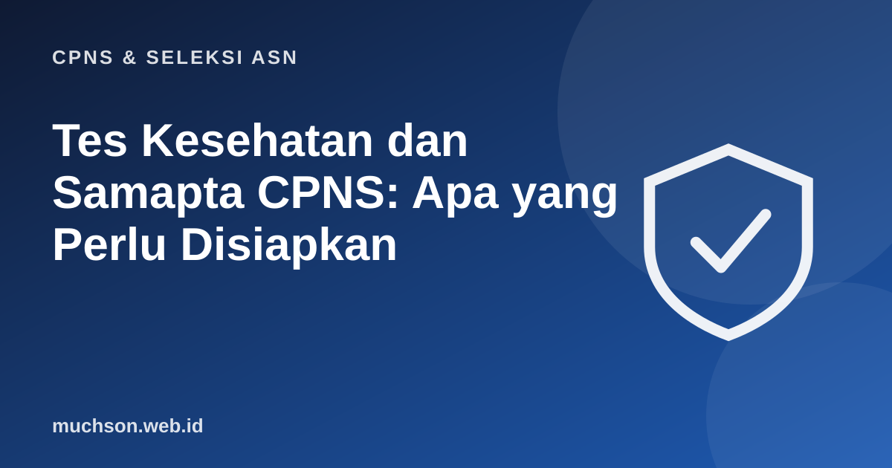

Beranda › Artikel › CPNS & Seleksi ASN
CPNS & Seleksi ASNTes Kesehatan dan Samapta CPNS: Apa yang Perlu Disiapkan
Kesehatan dinilai di lebih dari satu titik seleksi, bukan hanya satu kali pemeriksaan. Ada syarat sehat jasmani dan rohani saat melamar, tes kesamaptaan pada jabatan tertentu, dokumen kesehatan saat pemberkasan, hingga syarat sehat ketika diangkat menjadi PNS. Berikut peta lengkapnya dan cara menyiapkan diri.

Empat titik penilaian kesehatan dalam seleksi CPNS
Deskripsi teks diagram
- 1. Saat melamar: Syarat sehat jasmani dan rohani. Sesuai persyaratan jabatan (Pasal 23 ayat 1 huruf i)
- 2. Di SKB: Tes tambahan jika dipersyaratkan. Tes kesehatan jiwa dan tes kesegaran jasmani atau kesamaptaan (Pasal 34)
- 3. Pemberkasan: Dokumen kesehatan. Surat sehat dan surat bebas narkoba menurut ketentuan instansi
- 4. Pengangkatan PNS: Syarat akhir. Lulus diklat dan sehat jasmani rohani (Pasal 64)
Akun SSCASN CPNS 2026 dibuka 14 November 2026, tetapi jadwal pendaftaran dan seleksi belum diumumkan resmi per 17 November. Persyaratan kesehatan tiap jabatan hanya pasti setelah pengumuman lowongan terbit.
Syarat melamar: sehat sesuai persyaratan jabatan
Salah satu dari 11 syarat umum pelamar adalah sehat jasmani dan rohani sesuai dengan persyaratan jabatan yang dilamar (Pasal 23 ayat 1 huruf i). Frasa "sesuai persyaratan jabatan" penting: jabatan dengan beban fisik tinggi, misalnya yang mensyaratkan kesamaptaan, memiliki tuntutan berbeda dari jabatan administratif. Baca bagian persyaratan pada pengumuman lowongan, yang wajib memuat syarat yang harus dipenuhi pelamar (Pasal 21 ayat 4 huruf j).
Tes kesamaptaan dan kesehatan jiwa di SKB
Pasal 34 menyebut tes kesegaran jasmani atau tes kesamaptaan dan tes kesehatan jiwa sebagai dua dari beberapa materi yang dapat dipakai sebagai SKB tambahan. Artinya, hanya instansi dan jabatan yang menetapkannya yang mengujikannya. Bobot dan sifat menggugurkannya diumumkan pada lowongan (Pasal 22).
Gambaran umum yang dilaporkan media dan lembaga hukum untuk tes kesamaptaan pada beberapa instansi: Samapta A berupa lari dalam waktu tertentu, dan Samapta B berupa rangkaian seperti push up, sit up, pull up atau chinning, serta shuttle run. Standar dan norma berbeda antarinstansi dan antartahun, dan tidak semua instansi mengadakannya, sehingga jangan menganggap angka dari satu instansi berlaku untuk lainnya.
| Komponen yang lazim dilaporkan | Gambaran umum | Catatan |
|---|---|---|
| Samapta A | Lari dalam waktu tertentu (sering disebut lari 12 menit) | Jarak dan norma berbeda menurut jenis kelamin dan instansi |
| Samapta B | Push up, sit up, pull up atau chinning, shuttle run | Jumlah gerakan dan waktu mengikuti pedoman instansi |
| Tes kesehatan jiwa | Disebut sebagai salah satu materi SKB tambahan | Jenis alat tes mengikuti pedoman instansi |
Dokumen kesehatan saat pemberkasan
Setelah dinyatakan lulus, peserta melakukan pemberkasan sebelum usul penetapan NIP. Sebagai gambaran dari seleksi CPNS 2019, Siaran Pers BKN Nomor 048/RILIS/BKN/X/2020 yang mengacu Peraturan BKN Nomor 14 Tahun 2018 menyebut dokumen yang harus diunggah antara lain: SKCK yang masih berlaku saat pemberkasan; surat keterangan sehat jasmani dan rohani dari dokter yang berstatus PNS atau dokter pada unit pelayanan kesehatan; serta surat keterangan tidak mengonsumsi narkoba, psikotropika, dan zat adiktif lainnya dari unit pelayanan kesehatan Pemerintah.
Itu contoh dari seleksi 2019 dan aturan teknis lamanya. Masa berlaku surat dan jenis pemeriksaan bisa berbeda pada seleksi 2026. Tunggu surat edaran instansi sebelum menjadwalkan pemeriksaan, agar tanggal surat tidak kedaluwarsa.
Syarat akhir: sehat saat diangkat menjadi PNS
Untuk diangkat menjadi PNS setelah masa percobaan, calon PNS harus lulus pendidikan dan pelatihan serta sehat jasmani dan rohani (Pasal 64 ayat 1). Jadi menjaga kesehatan bukan urusan satu hari ujian, melainkan selama proses.
Rencana latihan kebugaran 8 minggu (umum)
Jika jabatan Anda mensyaratkan kesamaptaan, mulailah beberapa bulan sebelum tes. Rencana di bawah bersifat umum dan bukan nasihat medis. Konsultasikan dengan dokter bila Anda punya kondisi kesehatan tertentu, dan sesuaikan dengan pedoman instansi.
| Minggu | Fokus | Contoh kegiatan |
|---|---|---|
| 1 sampai 2 | Membangun kebiasaan | Jalan cepat atau lari ringan 3 kali seminggu 20 sampai 30 menit; peregangan |
| 3 sampai 4 | Daya tahan | Lari bergantian dengan jalan; mulai push up dan sit up dalam set pendek |
| 5 sampai 6 | Kekuatan | Tambah set push up, sit up, dan latihan tarik (pull up atau chinning bertahap) |
| 7 sampai 8 | Uji coba dan penghalusan | Simulasi lari berwaktu dan rangkaian samapta B; istirahat cukup menjelang tes |
Persiapan fisik berjalan paralel dengan belajar. Untuk sisi akademis, coba tryout SKD gratis di LolosSeleksi agar tahu posisi Anda sebelum tahap SKB.
Tanya jawab
Apakah semua jabatan CPNS memakai tes samapta?
Apa isi Samapta A dan Samapta B?
Surat sehat apa yang diperlukan saat pemberkasan?
Apakah penyakit tertentu otomatis menggugurkan?
Apakah harus sehat lagi setelah lulus?
Referensi
- Peraturan Menteri PANRB Nomor 6 Tahun 2024 tentang Pengadaan Pegawai ASN (teks resmi, BKN) (membuka tab baru)
- Siaran Pers BKN Nomor 048/RILIS/BKN/X/2020: ketentuan pemberkasan peserta lulus CPNS 2019 (membuka tab baru)
- Hukumonline: kenali tes kesamaptaan sebelum daftar CPNS Kemenkumham (membuka tab baru)
- Kompas.com, 16 November 2026: registrasi akun SSCASN CPNS 2026 dibuka, jadwal pendaftaran belum diumumkan (membuka tab baru)